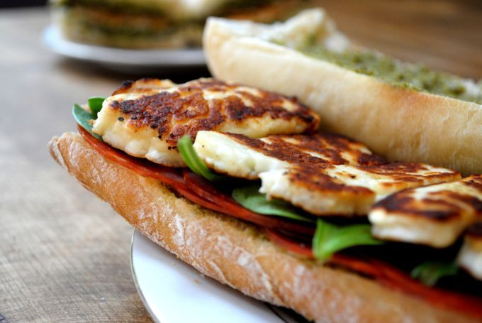

Halloumi Sandwiches

(As this recipe is an own creation and I'm not a food photographer, this is an approximation of what it looks like.)
Description
Halloumi is a delicious squeaky cheese that can be grilled without melting, and works very well for various
vegetarian recipes.
These sandwiches are largely my husband's creation and reasonably simple just to save me some typing.
Ingredients (for 2 servings)
- Ciabatta (1, we like one with olives)
- Halloumi (1 block)
- Avocado (1)
- Optional: A little lemon juice
- Hummus
Steps
- Slice the halloumi
- Cook the halloumi in a griddle pan over high heat to give it some nice sear marks and set aside
- Give the ciabatta about 10 minutes at 180 degrees in the oven to crisp it up a little
- Cut the ciabatta into 2 halves and then halve those lengthways
- Cut the avocado in half and discard the pit
- Slice the avocado, add some cracked black pepper and lemon juice if desired
- Mash each avocado half up on one side of each ciabatta half
- Place lettuce on top of the avocado as desired
- Place halloumi slices on top of the lettuce
- Generously spread the other half of each sandwich with hummus
- Place the hummus half on the rest of the sandwich and enjoy!